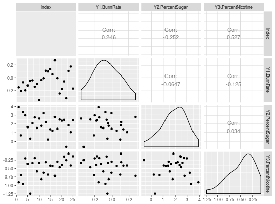
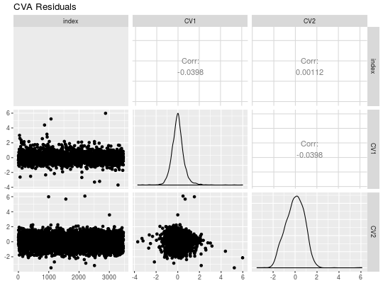

residuals calculates the regression residuals for reduced-rank regression and canonical variate analysis.
residuals(x, y, type = "identity", rank = "full", k = 0, plot = TRUE)
type = "identity", the default, uses \(\mathbf{\Gamma} = \mathbf{I}\) to fit a reduced-rank regression. type = "pca" fits a principal component analysis model as a special case of reduced-rank regression. type = "cva" fits a canonical variate analysis model as a special case of reduced-rank regression. type = "lda" fits a linear discriminant analysis model as a special case of reduced-rank regression.scatterplot matrix of residuals if plot = TRUE, the default, or a data frame of residuals if plot = FALSE.
Izenman, A.J. (2008) Modern Multivariate Statistical Techniques. Springer.
data(tobacco) tobacco_x <- tobacco[,4:9] tobacco_y <- tobacco[,1:3] tobacco_rrr <- rrr(tobacco_x, tobacco_y, rank = 1) residuals(tobacco_x, tobacco_y, rank = 1, plot = FALSE)#> # A tibble: 25 × 3 #> Y1.BurnRate Y2.PercentSugar Y3.PercentNicotine #> <dbl> <dbl> <dbl> #> 1 -0.15358056 3.9207245 -0.9019766 #> 2 -0.20963638 0.6975085 -0.6966471 #> 3 -0.07296342 3.3478677 -0.9497452 #> 4 -0.20128009 2.9831896 -0.1991789 #> 5 -0.12358413 1.6364610 -0.3622142 #> 6 -0.04949370 0.3195653 -1.2428487 #> 7 -0.04185307 2.0824285 -0.3387954 #> 8 -0.14497977 2.7465342 -0.1903404 #> 9 -0.09788965 1.5330911 -0.5878621 #> 10 -0.35531326 2.6111104 -0.3332054 #> # ... with 15 more rowsresiduals(tobacco_x, tobacco_y, rank = 1)library(dplyr) data(COMBO17) galaxy <- as_data_frame(COMBO17) galaxy <- select(galaxy, -starts_with("e."), -Nr, -UFS:-IFD) galaxy <- na.omit(galaxy) galaxy_x <- select(galaxy, -Rmag:-chi2red) galaxy_y <- select(galaxy, Rmag:chi2red) residuals(galaxy_x, galaxy_y, type = "cva", rank = 2, k = 0.001)